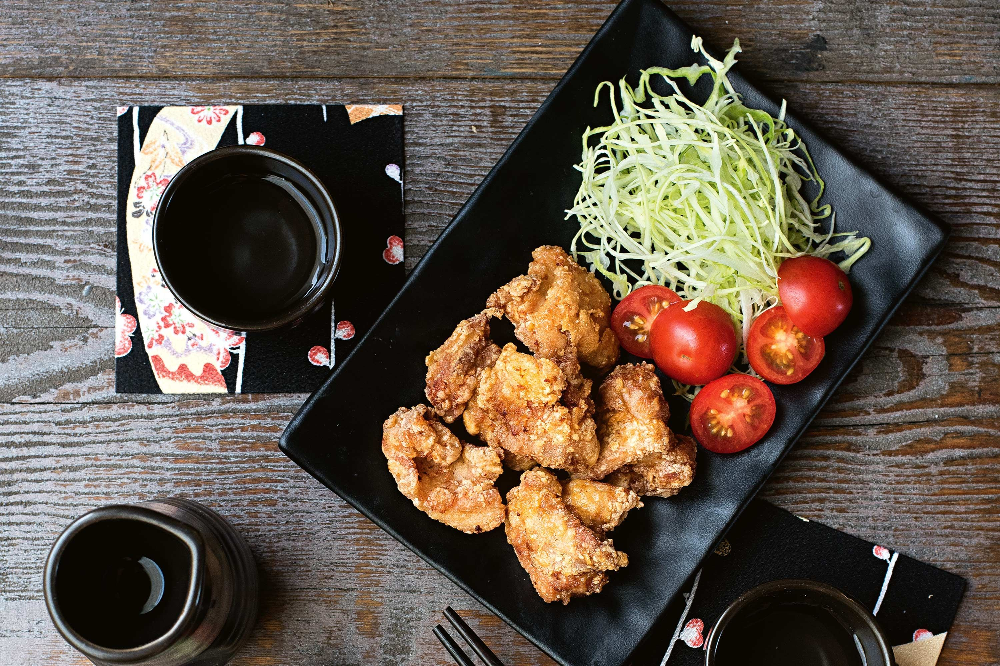

How to make Karaage

Description
Karaage. A grace from the heavens. An incredible, mouth watering
meal that will certainally leave you satisfied. This well-known Japanese fried chicken is my mother's signature recipe.
The double frying makes it so crispy. I can't get enough!
Ingredients
- 800g chicken thigh
- 1/2 tsp salt
- 1 tbsp sake
- 2 tsp mirin
- 2 tbsp soy sauce
- 3cm piece fresh ginger, finely grated
- Vegetable oil
- 1/2 cup cornflour
- Shredded green cabbage
- Halved cherry tomatos
Steps
- Pat chicken dry Place in a bowl. Add salt. Season with pepper. Toss to combine.
Add sake, mirin, soy sauce and ginger. Toss well to coat. Set aside for 15 minutes to marinate.
- Drain chicken, discarding marinade. Return chicken to bowl.
- Pour enough oil into a large saucepan or wok to come 4cm up the side.
Heat over medium-high heat (oil should reach 165C). Add cornflour to the chicken. Toss to coat.
Deep-fry chicken, in batches, for 5 minutes or until light golden and just cooked through.
Using tongs, transfer to paper towel to drain.
- Using a slotted spoon, remove any crumbs from the oil. Increase heat to high (oil should reach 180C).
Deep-fry chicken, in batches, for a further 1 to 2 minutes or until golden brown and crunchy.
Drain on paper towel. Serve with cabbage and tomato.